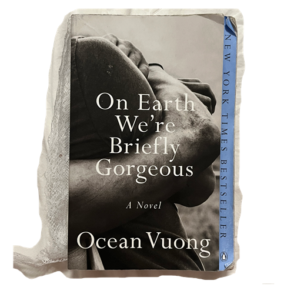
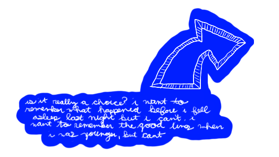
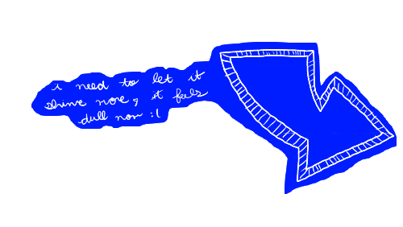
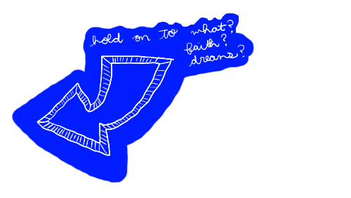
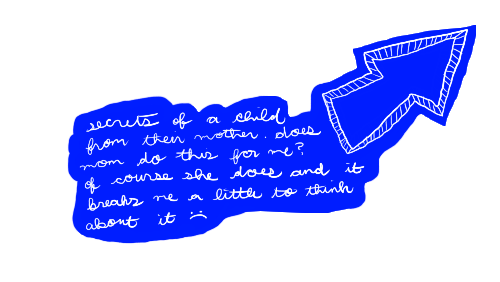
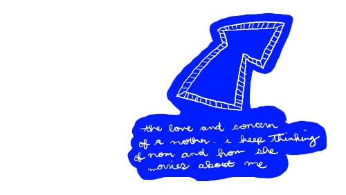
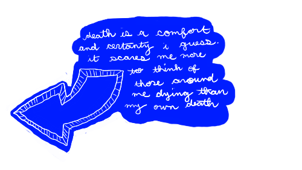

Catherine's Book Nook: Annotations from
On Earth We're Briefly Gorgeous a novel by Ocean Vuong
Excerpt I Pages 75 - 78

II
Memory is a choice.
You said that once, with your back to me,the way a god would say it. But if you were a god
you would see them. You would look down at this grove of pines, the fresh tips flared lucent
at each treetop, tender-damp in their late autumn flush. You would look past the branches,
past the rusted light splintered through the brambles, the needles falling, one by one, as
you lay your god eyes on them. You'd trace the needles as they hurdled themselves past the
lowest bough, toward the cooling forest floor, to land on the two boys lying side by side,
the blood already dry on their cheeks.

Although it covers both their faces, the blood belongs to the tall boy, the one with ees the
dark grey of a river beneath somebody's shadow. What's left of November seeps through their
jeans, their thin knit sweaters. If you were god, you'd notice that they're staring at you.
They're clapping and singing
"This Little Light of Mine," the Ralph Stanley version,
they'd listen to ealier in the afternoon on the tall boy's stereo. It was his old man's favorite
song, the tall boy had said. And so now their heads sway side to side as their teeth glow
beneath the notes, and the caked blood crumbles from their jaws, flecking their pale throats as
the song leaves them in fistfuls of smoke.
"This little light of mine, I'm gonna let it shine.
This little light of mine, I'm gonna let it shine...
All in my house, I'm gonna let it shine."
The pine needles spin and sputter around them in the miniscule wind made by their movinglimbs.
The cut under the tall boy's eye has reopened from his singing, and a black-red line now runs
down from his left ear, curing at hisneck and vanishing in the ground. The small boy glances at
his friends, the terrible bulb of an eye, and tries to forget. If you were a god you would tell
them to stop clapping.
You would tell them that the most useful thing
one can do with empty hands is to hold on.
But you are not god.


You're a woman. A mother, and your son is lying under the pines while
you sit at a kitchen table across town, waiting again.
You have just reheated, for the third time,
the pan of fied flat noodles and scallions.
Your breathe fogs the glass as you stare out the window, waiting for the boy's orange New York
Knicks sweater to flash by, as he must be running, it being so late.
But your son is still under the trees beside the boy you will never meet.
They are yards from the closed overpass, where a plastic bag thrashes against the chain link
surrounded by hundreds of one-shot liquor bottles. The boys begin to shiver, their claps slow,
nearly inaudible. Their voices subdued as the wind swarms hugely above them-needles clicking
down like the hands of smashed watches.


There are times, late at night, when your son would wake believing a bullet is lodged inside
him. He'd feel it floating on the right side of his chest, just between the ribs. The bullet was
always here, the boy thinks, older even than himself-and his bones, tendons, and veins had
merely wrapped around the metal shard, sealing it inside him.
It wasn't me, the boy thinks, who was inside my mother's womb,
but this bullet, this seed I bloomed around.
Even now, as the cold creeps around him, he feels it pokng out ftom his chest, slightly tenting
his sweater. He feels for the protrusion but,as usual, finds nothing. It's receding, he thinks.
It wants to stay inside me. It is nothing without me.
Because a bullet without a body is a song without ears.

Across town, facing the window, you consider reheating the noodles one more time.
You sweep into your palm pieces of the
paper napkin you had torn up, then get up to toss it out.
You return to the chair, wait. That window, the same one your son had stopped at one night
before
coming in, the square of light falling across him as he watched your face, peering out at him.
Evening had turned the glass into a mirror and you couldn't see him there, only the lines scored
across your cheek and brow, a face someow ravaged by stillness. The boy, he watchs his mother
watching nothing, his entire self inside the phantom oval of her face, invisible.
The song long over, the cold a numbing sheath over their nerves. Under their clothes, goose bumps appear, making their thin, transluscent hair rise, then bend against the fabric under their shirts.
"Hey Trev," your son says, his friend's blood crusted tight on his cheek. "Tell me a secret." Wind, pine needles, seconds.
"What kind?"
"Just-like...a normal secret. It doesn't have to suck."

"A normal one." The hush of thinking, steady breaths. The stars above them a vast smudge on a hastily-wiped chalkboard. "Can you go first?"
On the table across town, your fingers stop drumming the Formica.
"Okay. You ready?"
"Yeah."
You push back your chair, grab your keys, and walk out the door.
"I'm not scared of dying anymore."
(A pause, then laughter.)
The cold, like river water, rises to their throats.
Ma. You once told me that memory is a choice. But if you were god, you'd know it's a float.

Excerpt II Pages 137 - 140
Sometimes, when I'm careless, I tink survival is easy: you just keep moving forward with what you have, or what's left of what you were given, until something changes-or you realize, at last, that you can change without disappearing, that all you had to do was wait until the storm passes you over and you find that-yes- your name is still attached to a living thing.
A few months before our talk at Dunkin' Donuts, a fourteen-year-old boy in rural Vietnam had acid thrown in his face after he slipped a love letter into another boy's locker. Last summer, twenty-eight-year-old Florida native Omar Mateen walked into an Orlando nightclub, riased his automatic rifle, and opened fire. Forty-nine people were killed. It was a gay nightclub and the boys, because that's who they were-sons, teenagers- looked like me: a colored thing born of one mother, rummaging the dark, each other, for happiness.
Sometimes, when I'm careless, I believe the wound is also the
place where the skin reencounters itself,
asking of each end, where have you been?
Where have we been, Ma?
The weight of the average placenta is roughly one and a half pounds. A disposable organ where nutrients, hormones, and waste are passed between mother and fetus. In this way, thee placenta is a kind of language-perhaps our first one, our true mother tounge. At four or five months, my brother's placent was already fully developed. You two were speaking-in blood utterances.
"He came to me, you know."
The rain outside stopped. The sky an empty bowl.
"He came to you?"
"My boy, he came to me in a dream, about a week after the hospital. He was sitting on my doorstep.
We watched each other for a while, then he just turned and walked away,
down the alley. I think he just wanted to see what I looked like,
what his mom looked like.
I was a girl. Oh god...
Oh god, I was seventeen."
"
In college a professor once insisted, during a digression from aa lecture on Othello, that, to him, gay men are inherently narcissistic, and that overt narcissism might even be a sign of homosexuality in men who have no yet accepted their "tendencies." Even as I fumed in my seat, the tought wouldn't stop burrowing into me. Could it be that, all those years ago, I had followed Gramoz into the schoolyard simply because he was a boy, and therefore a mirror or myself?
But if so-why not?
Maybe we look into mirrors not merely to seek beauty,
regardless how illusive, but to make sure,
despite the facts, that we are still here.
That the haunted boy we move in has not yet been annihilated, scraped out. To see yourself still yourself is refuge men who have not been denied cannot know.
I read that beauty has historically demanded replication. We make more of anything we find aesthetically pleasing, whether it's a vase, a painting, a chalice, a poem. We reproduce it in order to keep it, extend it through space and time. To gaze at what pleases-a fresco, a peach-red mountain range, a boy, the mole on his jaw-is in itself, replication- the image prolonged in the eye, making more of it, making it last. Staring into the mirror, I replicate myself into a future where I might not exist. And yes, it was not pizza bagelss, all those years ago, that I wanted from Gramoz, but replication. Because his offering extended me into something worthy of generosity, and therefore seen. It was that very moreness that I wanted o prolong, to return to.
catherinethyle@gmail.com ( ´∀｀）☆ instagram @ catisartist